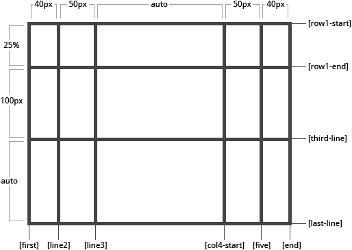

grid-template-columns & grid-template-rows
Defines the columns and rows of the grid with a space-separated list of values. The values represent the track size, and the space between them represents the grid line.
- <track-size>: can be a length, a percentage, or a fraction of the free space in the grid (using the fr unit)
- <line-name>: an arbitrary name of your choosing
.grid {
display: grid;
grid-template-columns: 100px 100px auto 100px 100px;
grid-template-rows: 100px 100px 100px;
}
When you leave an empty space between the track values, the grid lines are automatically assigned positive and negative numbers:

But you can choose to explicitly name the lines. Note the bracket syntax for the line names:
.grid {
grid-template-columns: [first] 100px [line2] 100px [line3] auto [col4-start] 100px [five] 100px [end];
grid-template-rows: [row1-start] 100px [row1-end] 100px [third-line] 100px [last-line];
}

Note that a line can have more than one name. For example, here the second line will have two names: row1-end and row2-start:
.grid {
grid-template-rows: [row1-start] 25% [row1-end row2-start] 25% [row2-end];
}